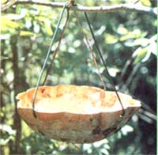
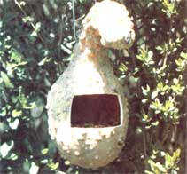

By spending a little time in the workshop, you can beautify your yard, provide yourself with a wonderful source of entertainment for years to come, and cut down on the number of garden (and people) attacking pests that'll be around your place this spring and summer! All you have to do is whip up a few homegrown bird feeders and baths.
To build the little eatery shown in the accompanying photograph, just locate a dried gourd (if you don't have any left over from your own harvest, check with your neighbors or gardening friends). Then use a fine-toothed saw to cut a "bird-sized" opening, remove the seeds, and drill two holes - on opposite sides of the top - to accommodate the hooked ends of a V-shaped piece of coat hanger.
The bird bath (which you probably won't put out till warmer weather . . . as a late freeze could turn it into a miniature skating rink) is made from a circular gourd. Simply cut across the vegetable to form a dish, drill four holes at equidistant points around the upper edge, and make two coat hanger "V"s - each of which will be hooked into one pair of holes - to use when suspending the bath from a handy tree limb.
One caution, though: It's been speculated that - especially during the winter, when food is hard to come by - feeder-fed birds might well starve if their supply happened to be cut off during inclement weather. If you start hosting your backyard feathered friends now, be sure to keep the feeder stocked. After all, a little regular attention is a small price to pay for the help and pleasure that the colorful bathers and diners will give to you in return!
|
|
 |
 |